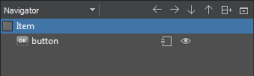

Qt Quick UI Forms
You can use Qt Creator wizards to create UI forms that have the filename extension .ui.qml. The UI forms contain a purely declarative subset of the QML language. It is recommended that you edit the forms in the Design mode. Qt Creator enforces the use of the supported QML features by displaying error messages.
The following features are not supported:
- JavaScript blocks
- Function definitions
- Function calls (except
qsTr) - Other bindings than pure expressions
- Signal handlers
- States in other items than the root item
- Root items that are not derived from QQuickItem or Item
The following types are not supported:
- Behavior
- Binding
- Canvas
- Component
- Shader Effect
- Timer
- Transform
- Transition
Using Qt Quick UI Forms
You can edit the forms in the Form Editor and Text Editor tabs in the Design mode. Items that are supposed to be used in QML code have to be exported as properties:
Item {
width: 640
height: 480
property alias button: button
Button {
anchors.centerIn: parent
id: button
text: qsTr("Press Me")
}
}
The property alias exports the button to the QML code that uses the form. You can use the (Export) button in the Navigator to export an item as a property:

In the QML file that uses the form, you can use the button property alias to implement signal handlers, for example. In the following code snippet, the UI form is called MainForm.ui.qml:
MainForm {
anchors.fill: parent
button.onClicked: messageDialog.show(qsTr("Button pressed"))
}
You can also assign properties or define behavior or transitions.
To move from the Design mode directly to the implementation of a type in the .qml file, right-click the type in the Navigator and select Go to Implementation in the context menu.